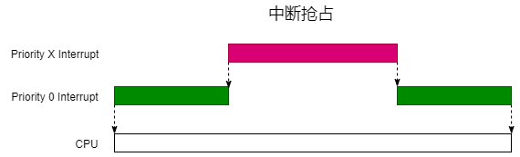
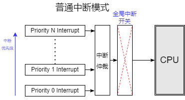
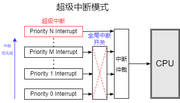

中断配置
9 Apr 2025
Read time: 1 minute(s)
本节适用以下产品平台：
-
D13x
-
D12x
中断嵌套
中断嵌套是指一个高优先级的中断可以打断正在执行的低优先级中断，允许系统在处理紧急任务时，能够及时响应更高级别的中断请求。中断优先级可配置为 0-7 ，所有中断默认优先级为 0 。

通过以下 API
设置或查询某个中断的优先级：
aicos_irq_set_prio(UART0_IRQn, 2); // 设置 UART0 的中断优先级为 2
aicos_irq_get_prio(UART0_IRQn); // 获取 UART0 的中断优先级注：
用来处理进程切换的软件中断 Pend SV_Handler 不支持中断嵌套。
超级中断
超级中断功能是指高优先级的中断不仅能实现中断嵌套，还能突破 Kernel 全局中断开关的限制。超级中断通过设置一个优先级门限来实现。当中断优先级高于这个门限时，即使全局中断被禁用，超级中断也能执行。
配置方法
可以通过 scons --menuconfig 命令进入 menuconfig
配置界面，配置超级中断的相关参数：
Chip options --->
[*] Use threshold as global interrupt switch // 启用超级中断
(6) Threshold value (0-7) (NEW) // 设置中断优先级门限，大于该门限的中断为超级中断RT-Thread 下全局中断的开关函数为 rt_hw_interrupt_enable() /
rt_hw_interrupt_disable()：
- 对于普通中断模式，通过操控 mstatus 寄存器中的 MIE bit
可以实现中断的全局开关，原理如下： 
-
把 mstatus 寄存器中的 MIE bit 保持常开，通过设置中断门限来实现中断的全局开关，可以保证一部分超级中断能突破 rt_hw_interrupt_disable() 的限制，原理如下图所示：
注意：
超级中断中不能访问使用 rt_hw_interrupt_disable() 保护的竞态资源，因为这时候的访问时不安全的，意味着大部分 Kernel 提供的 API 不能使用。